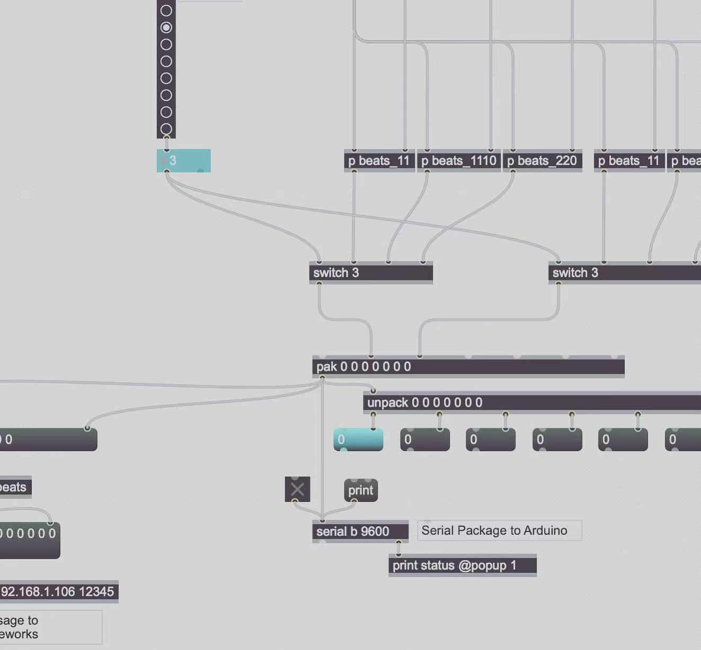
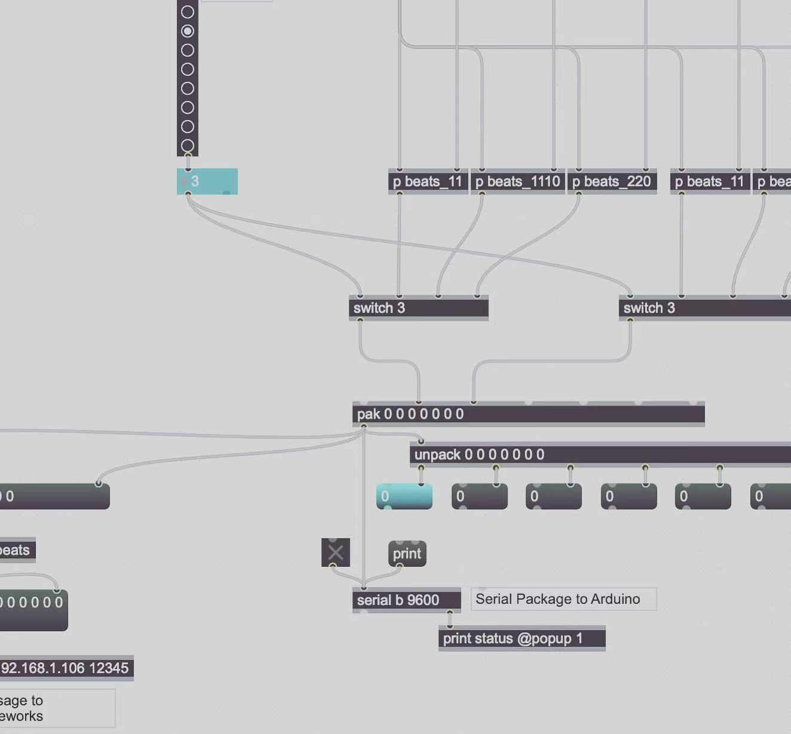

lively (Lively)
lively is an audio visual and interactive performance installation inspired by the lively atmosphere of Chinese New Year. The whole performance is arranged through data and programming. Rhythm is not only sound in this work. It also drives mechanical movement and projected visuals, so the audience can both feel the atmosphere and see how it is formed.
Concept
The feeling of lively is not only about being louder or faster. It comes from many elements working together, such as rhythm density, changes in strength, repeated actions, sudden breaks, and a sense that events keep happening in the space. People can feel it clearly, but it is hard to describe and even harder to reproduce.
This project treats lively as a system. It breaks the atmosphere into controllable variables and relationships, such as rhythm density, strike intensity, strike position, and visual feedback. These parts are then programmed into a repeatable machine performance.
System and Process
The work is built from four connected modules. They generate motion, arrange rhythm, control hardware, and project visuals. All parts run on the same timeline and form a closed loop between rules, actions, and feedback.
Mechanical Arm Design and Fabrication
The mechanical arm is designed from the gesture and logic of drumming. It supports two main movements.
One is horizontal rotation. It controls where the drumstick hits the drum surface, from the center to the edge. This changes both the sound and the tension of the performance.
The other is vertical rotation. It controls how the drumstick lifts and drops. This creates differences in speed, strength, pauses, and repeated hits.
The arm is made with methods such as 3D printing and laser cutting. The goal is stable motion and clear control, so the performance can be repeated and adjusted.
Max MSP for Rhythm Choreography
Max MSP is the control center for the performance. It arranges the full timeline and programs the drum rhythms, trigger signals, and strike positions. It controls the physical device and also drives the visuals at the same time. The result is not random drumming. It is a structured performance built from rules and timing.
Arduino for Motion Control
Arduino reads the control signals from Max MSP and turns them into motion commands for the arm. PWM signals are used to drive the servos. An expansion board supports control for eight servos. This hardware layer turns rhythm data into real physical events, so the audience can see how the system builds intensity over time.
openFrameworks for Projection Mapping
openFrameworks is used for projection mapping. It projects visuals onto the surface of the device as an interface and strengthens the immersive feeling. The visuals change with the drum beats and strike positions. It makes hidden parts of the performance visible, such as rhythm density, trigger intensity, and movement across the drum surface.


 

Viewing Experience
In the space, the audience faces a system that performs. The mechanical arm produces sound and motion. The projection provides visual feedback. The programmed timeline gives structure. As the rhythm becomes denser, the strike position shifts, and the visuals respond more strongly, the atmosphere grows from a clear set of relationships rather than from volume alone.
Method and Experimental Approach
In 2018, real time control and projection mapping were not rare tools. The experimental part of lively does not depend on technical novelty. It comes from using an algorithmic method to rebuild the feeling of a specific scene. The scene is understood as a system of relationships. By adjusting parameters and testing the results, the work studies how an atmosphere can be composed, performed, and iterated as a repeatable mechanism.
Artistic Statement
Dongyuan Liu is interested in how a scene becomes an experience. For him, lively is not a single sound or image. It is a state built from relationships that accumulate in time and space. In lively, he models the atmosphere of Chinese New Year as a system and rebuilds it through rhythm, position, intensity, and feedback. He hopes the audience can be drawn into the performance, while also noticing that the emotional intensity is produced by an organized structure that can be observed, adjusted, and replayed.